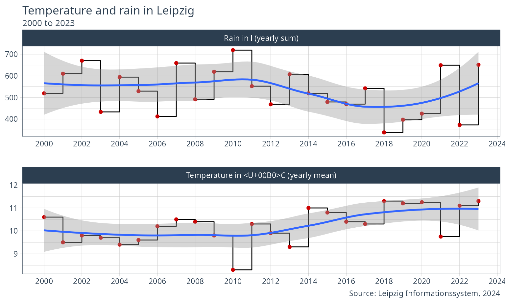

data <- get_lis_geo(rubrik_nr = 3) # weather
colnames(data) #> [1] "KENNZIFFER" "EINHEIT" "JAHR_2000" "JAHR_2001" "JAHR_2002" #> [6] "JAHR_2003" "JAHR_2004" "JAHR_2005" "JAHR_2006" "JAHR_2007" #> [11] "JAHR_2008" "JAHR_2009" "JAHR_2010" "JAHR_2011" "JAHR_2012" #> [16] "JAHR_2013" "JAHR_2014" "JAHR_2015" "JAHR_2016" "JAHR_2017" #> [21] "JAHR_2018" "JAHR_2019"
data$KENNZIFFER #> [1] "Lufttemperatur (Jahresmittel)" #> [2] "Abweichung der Lufttemperatur vom Normalwert (8,8°C)" #> [3] "Jahreshöchsttemperatur" #> [4] "Jahrestiefsttemperatur" #> [5] "30°C und wärmer (heiße Tage)" #> [6] "25°C und wärmer (warme Tage)" #> [7] "unter 0°C (Eistage)" #> [8] "unter 0°C (Frosttage)" #> [9] "Sonnenscheindauer (Jahressumme)" #> [10] "Abweichung der Sonnenscheindauer vom Normalwert (1 494 h)" #> [11] "Tage mit mindestens einer Stunde Sonnenschein" #> [12] "Niederschlagshöhe (Jahressumme)" #> [13] "Abweichung der Niederschlagshöhe vom Normalwert (511 mm)" #> [14] "Maximale Tageshöhe der Niederschläge" #> [15] "Tage im Jahr mit Niederschlagshöhe von mindestens 0,1 mm" #> [16] "Tage im Jahr mit Niederschlagshöhe von mindestens 10 mm" #> [17] "Jahresmittel der relativen Luftfeuchte" #> [18] "Maximale Windspitze"
data.sub <- data %>% filter(KENNZIFFER == "Lufttemperatur (Jahresmittel)" | KENNZIFFER == "Niederschlagshöhe (Jahressumme)") %>% mutate(KENNZIFFER = case_when( KENNZIFFER == "Lufttemperatur (Jahresmittel)" ~ "Temperature in °C (yearly mean)", KENNZIFFER == "Niederschlagshöhe (Jahressumme)" ~ "Rain in l (yearly sum)", TRUE ~ as.character(NA) ))
data.sub <- data.sub %>% pivot_longer( cols = starts_with("JAHR"), names_to = "Year", values_to = "Value" ) %>% mutate(Year = as.numeric(str_remove(Year, "JAHR_")))
ggplot(data.sub, aes( x = Year, y = Value )) + geom_step() + geom_point(colour = "red3") + scale_x_continuous(breaks = seq(2000, 2019, 2)) + geom_smooth(method = "lm") + tidyquant::theme_tq() + theme(legend.position = "bottom") + facet_wrap(. ~ KENNZIFFER, nrow = 2, scales = "free") + labs( x = NULL, y = NULL, title = "Temperature and rain in Leipzig", subtitle = "2000 to 2019", caption = "Source: Leipzig Informationssystem, 2020" )
